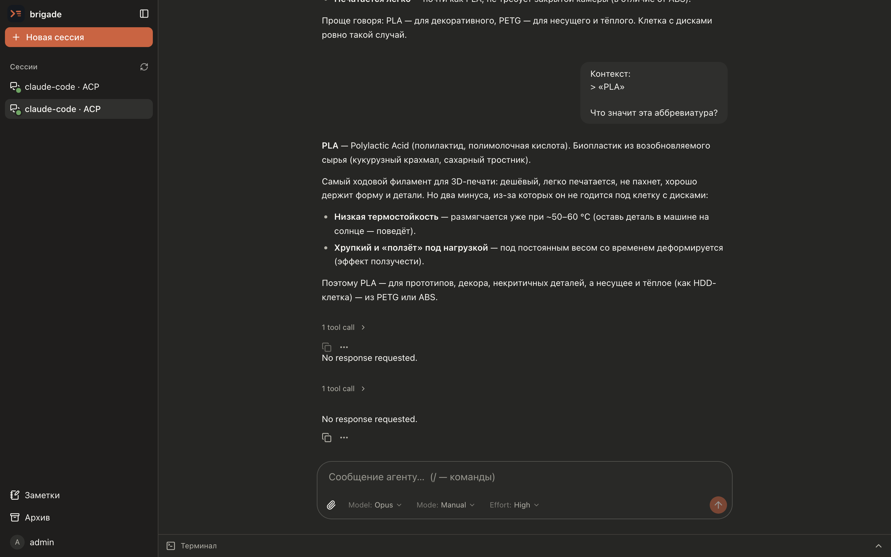
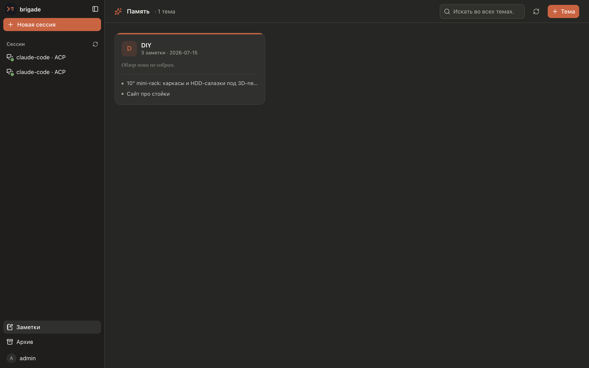
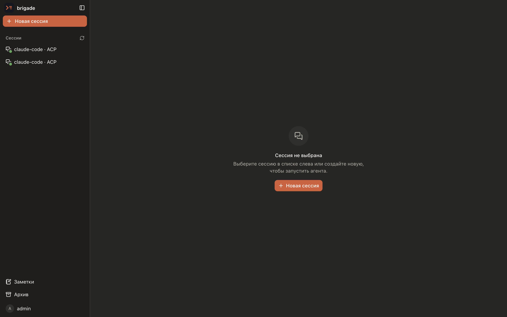

> ship the landing page
brigade keeps agent sessions alive on your own server and mirrors them to any browser. Close the laptop, open the phone — the agent keeps working.
Agents run on the server, not in the tab. Sessions survive backend restarts and reconnects — a turn that started on your desktop finishes while you watch from your phone. Nothing to babysit.
Structured chat with tool-call cards and quoted context, a git-backed memory dashboard, and a live session list — all in one dark, keyboard-friendly UI.



brigade spawns coding agents, keeps them alive, and gives you a real interface to drive them — terminal or structured chat, isolated how you like.
A full terminal (pty + xterm.js) or a structured chat over ACP → AG-UI: tool-call cards, diffs, plans and permission prompts.
Claude Code works today. Sessions speak ACP (with a CLI under the hood), so opencode and other agents drop in next — no rewrite.
Run agents as host processes, or one container per session. Set per instance; every session resumes from agent state after a restart.
Fork any chat into an independent branch — full history carried over — and explore two directions without losing the first.
A dev server the agent starts is instantly live at a per-session subdomain — built-in L7 proxy and TLS, no reverse proxy to wire up.
You and the agent save notes to a personal, searchable store — markdown committed to your own git repo. Delete the chat, keep the knowledge; organized into topics.
One Go binary serves every surface — API, embedded SPA, terminal and chat streams, auth, storage, the preview proxy — then spawns an agent per session.
Two ways to run it — a prebuilt binary or Docker. It drives Claude Code today; more ACP agents are on the way.
# latest linux/amd64 build from GitHub Releases
curl -L https://github.com/grigory51/brigade/releases/latest/download/brigade-linux-amd64.tar.gz | tar xz
./brigade --config config.yaml # → http://localhost:8080docker run -d --name brigade -p 8080:8080 \
-v /var/run/docker.sock:/var/run/docker.sock \
-v brigade-data:/data \
-e BRIGADE_MODE=docker \
-e BRIGADE_JWT__SECRET=change-me \
ghcr.io/grigory51/brigade:latestPrefer a native window? make app bundles a self-contained Brigade.app for macOS — the same brigade, node and agent runtime included. A Kotlin Multiplatform mobile client shares the backend too.